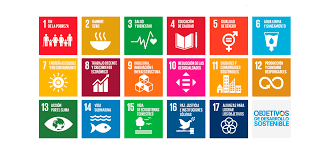

Panel Title
Los Objetivos de Desarrollo Sostenible (ODS) son una guía
estratégica global que busca construir un mundo más justo,
equitativo y sostenible. Se componen de objetivos adoptados por
los líderes mundiales en 2015 y están dirigidos a solucionar los
principales desafíos que enfrenta la humanidad, como el hambre,
el cambio climático, la desigualdad y la falta de acceso a
servicios básicos.
Los ODS son parte de la Agenda
2030, un compromiso que involucra a gobiernos, empresas,
instituciones educativas, organizaciones sociales y ciudadanos.